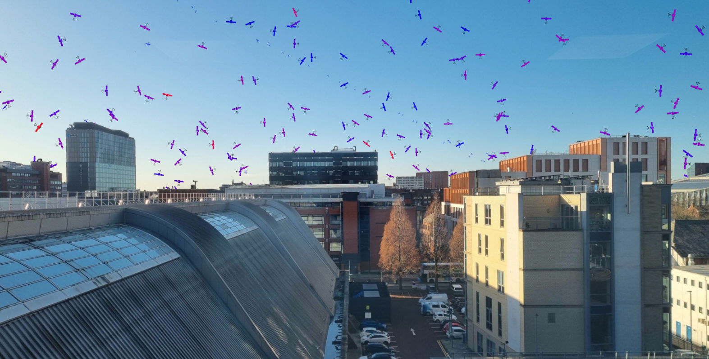
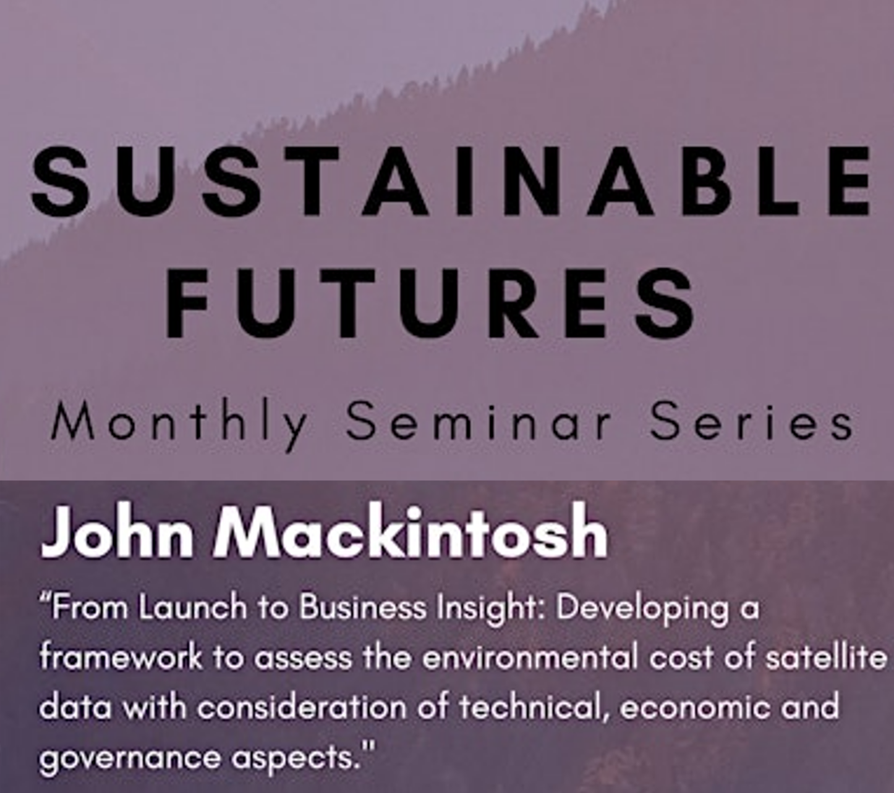
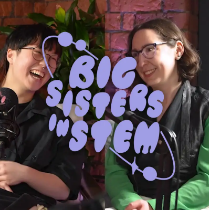
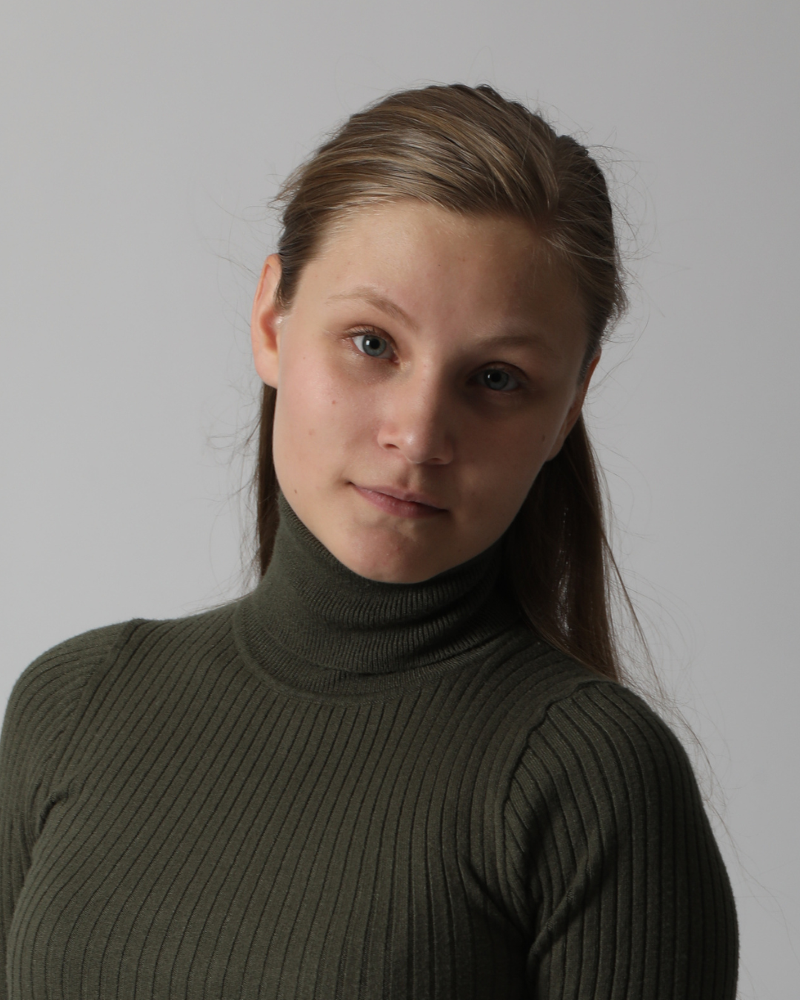

Featured · BBC News
Manchester tool helps to stop satellite crashes
BBC News features John Mackintosh’s work on helping mission designers plan safer, more sustainable satellite missions.
Read the articleNews, conversations and public events where the group’s research reaches beyond the university.

Featured · BBC News
BBC News features John Mackintosh’s work on helping mission designers plan safer, more sustainable satellite missions.
Read the articleMore from the group
Talk

John Mackintosh explores how the environmental cost of satellite data can be assessed across technical, economic and governance considerations.
Watch the talkPodcast

Dr Ciara McGrath joins Jasmine Luby Barrow and Vanessa Thai to discuss intersectionality, science and creating change.
Listen to the episodeOutreach

Carys Thomas helped develop a workshop showing how space science can help us care for Earth, and spoke about her route into science and engineering.
For media, speaking or collaboration enquiries, get in touch.